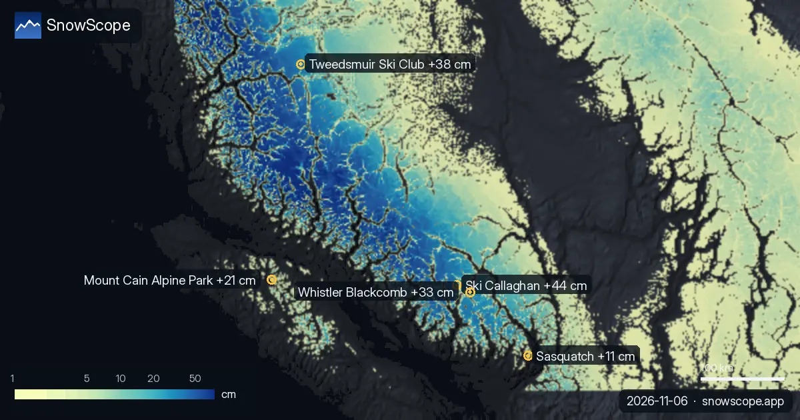

Neuschnee in Westkanada: 44 cm in 72 Stunden in Ski Callaghan (6. November)
Ski Callaghan bekam in den letzten 72 Stunden 44 cm Neuschnee, davon 32 cm in den letzten 24 Stunden. Jetzt liegen dort laut unserem Schneemodell etwa 41 cm in den oberen Hängen.
Die Live-Schneeprognose für Ski Callaghan in der SnowScope-AppSchneehöhen, Pulverschnee-Alarme und 3D-Karte, gratis.
Wo der Neuschnee fiel
Außerdem bekamen Tweedsmuir Ski Club, Whistler Blackcomb und Mount Cain Alpine Park in den letzten 72 Stunden 38 cm, 33 cm und 21 cm.
52 von 57 Skigebieten in Westkanada haben heute Schnee in den oberen Hängen, und unser Modell zählt 316.910 km² Schneefläche.
| Skigebiet | Schneehöhe | Neuschnee, 72 h | Erwartet, nächste Tage | Gipfel |
|---|---|---|---|---|
| Ski Callaghan | 41 cm | 44 cm | 63 cm | 998 m |
| Tweedsmuir Ski Club | 46 cm | 38 cm | 34 cm | 1.650 m |
| Whistler Blackcomb | 78 cm | 33 cm | 74 cm | 2.259 m |
| Mount Cain Alpine Park | 71 cm | 21 cm | 50 cm | 1.616 m |
| Sasquatch | 17 cm | 11 cm | 20 cm | 1.316 m |
Was die Messstationen zeigen
Die Werte der Skigebiete sind Modellschätzungen für die oberen Hänge; Messstationen messen an einem Punkt, am angegebenen Tag.
Höhe, Hänge und Schneefallgrenze
In Ski Callaghan liegt die Nullgradgrenze am 7. November zwischen 1.040 m und 2.140 m, über dem höchsten Punkt des Skigebiets (998 m): An diesem Tag ist auf allen Hängen Regen oder nasser Schnee möglich.
Was als Nächstes kommt
Bis zum 9. November ergibt unsere Prognose 74 cm in Whistler Blackcomb, 63 cm in Ski Callaghan und 50 cm in Mount Cain Alpine Park.
Prognosen für einige Tage können sich ändern: Schau am Tag vor der Abfahrt noch einmal auf die Karte.
Sicherheit und Lawinengefahr
Nach Neuschnee bildet der Wind Triebschnee in windabgewandten Hängen. Abseits der Piste sind die ersten Tage am heikelsten.
Tipps für Skifahrer
- Neuschnee ist in den ersten Stunden am besten: Starte früh, vor der Sonne und dem Andrang.
- Such den Schnee weit oben und an Nordhängen: Dort hält er am längsten, Südhänge verlieren ihn zuerst in der Sonne.
- Lies vor dem Freeriden oder einer Skitour den offiziellen Lawinenlagebericht (Links unten).
- Schnee auf der Karte heißt nicht, dass das Skigebiet offen ist: Prüfe Lifte und Öffnungstermine auf der Website des Skigebiets.
- Stell in der SnowScope-App einen Pulverschnee-Alarm ein, damit du weißt, wann Ski Callaghan Neuschnee bekommt.
Zu diesen Zahlen
Die Schneehöhen der Skigebiete sind der meiste Schnee in den oberen Hängen laut SnowScope-Schneemodell (etwa 1 km, Lauf vom 5. November); es sind Schätzungen für eine Fläche, keine Messung an einem Punkt. Werte von Messstationen sind Messungen am angegebenen Tag. Prognosen können sich ändern. Lies vor dem Freeriden immer den offiziellen Lawinenlagebericht.
Offizielle Lawinenlageberichte: Avalanche Canada
Diesen Bericht zitieren
Für Forschung, Lehre oder Presse: Zahlen und Grafiken sind unter CC BY 4.0 mit dieser Quellenangabe frei nutzbar.
SnowScope (2026), Neuschnee in Westkanada: 44 cm in 72 Stunden in Ski Callaghan (6. November), https://snowscope.app/blog/de/2026/11/western-canada-fresh-snow-powder-alert-6-november-2026.html, abgerufen am 2026-11-06
SnowScope (Atlas Labs). (2026, November 6). Neuschnee in Westkanada: 44 cm in 72 Stunden in Ski Callaghan (6. November). SnowScope snow reports. https://snowscope.app/blog/de/2026/11/western-canada-fresh-snow-powder-alert-6-november-2026.html
BibTeX
@misc{snowscope2026westerncanadafreshsnowpo,
author = {{SnowScope (Atlas Labs)}},
title = {Neuschnee in Westkanada: 44 cm in 72 Stunden in Ski Callaghan (6. November)},
year = {2026},
month = nov,
howpublished = {\url{https://snowscope.app/blog/de/2026/11/western-canada-fresh-snow-powder-alert-6-november-2026.html}},
note = {Published 2026-11-06 17:00 UTC; accessed 2026-11-06}
}· CC BY 4.0 · Methoden, Daten und Werkzeuge →
Ski Callaghan: Schnee und Temperatur nach Höhe, dieser Winter vs letzter (Werkzeuge) →
Ski Callaghan folgen
Gratis: eine Nachricht, wenn Neuschnee kommt, und jeden Morgen die Vorhersage.